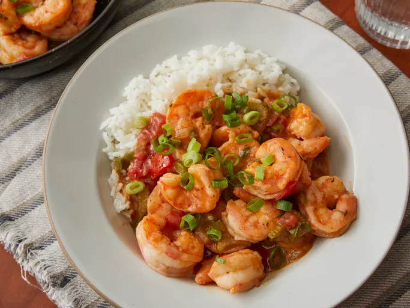

Chef John's Shrimp Etouffee

Étouffée is a dish consisting of shellfish cooked in a rich
sauce served over rice. The secret to authentic étouffée is a cooking
technique
called "smothering," a Cajun and Creole cooking technique
that is similar to braising. In French, "étouffée" means "smothered."
Ingredients:
- Shrimps
- Oil
- Stock
- Butter
- Vegetables
- Rice
Cooking steps
- Make spice blend
- Season and cook the shrimp. Strain the shrimp juice into the stock.
- Sauté the onion, bell pepper, and celery in butter. Season and sprinkle with flour.
- Add the tomatoes and the stock. Cook until thickened and season with sauces.
- Stir the shrimp into the sauce and continue cooking until they're translucent.
- Garnish and serve the étouffée over rice.